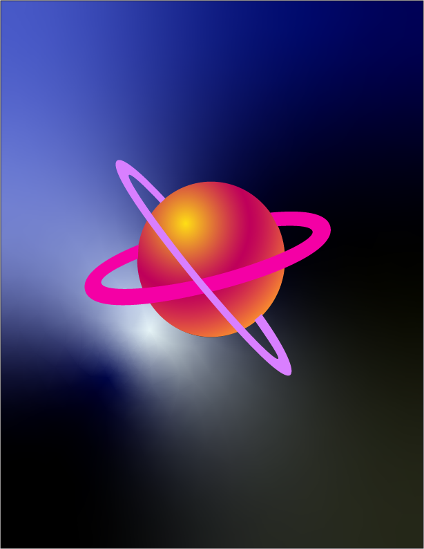
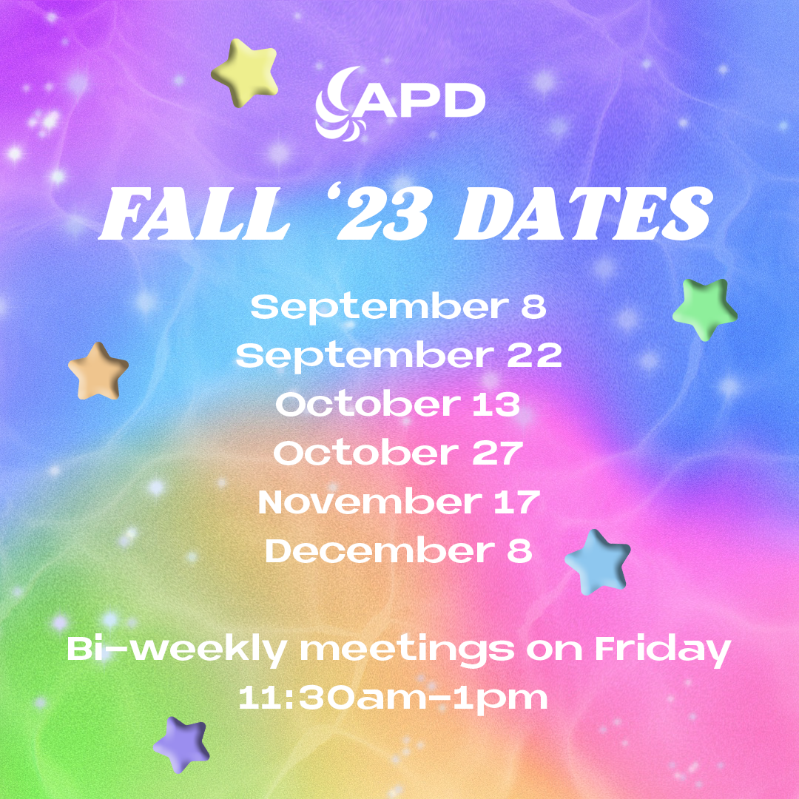
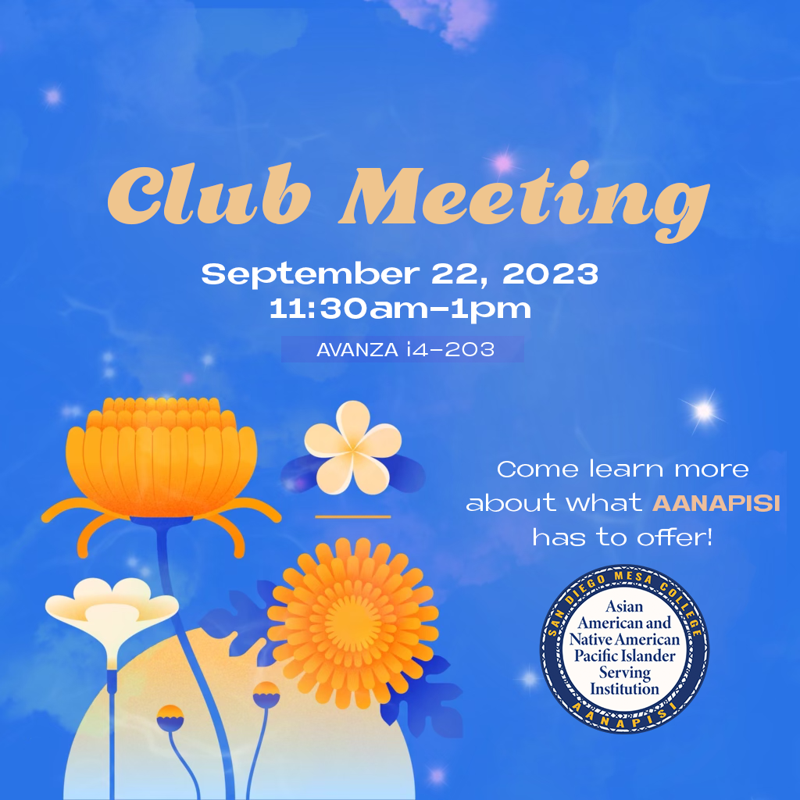
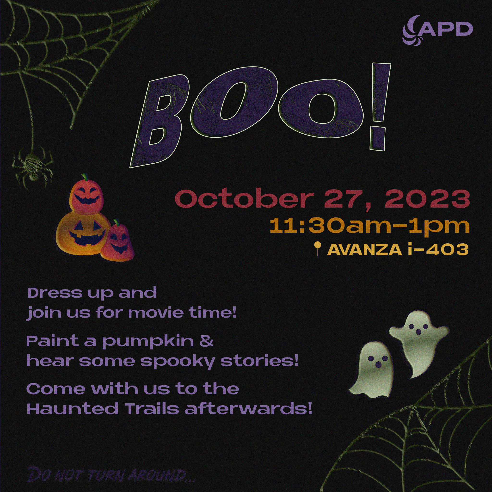
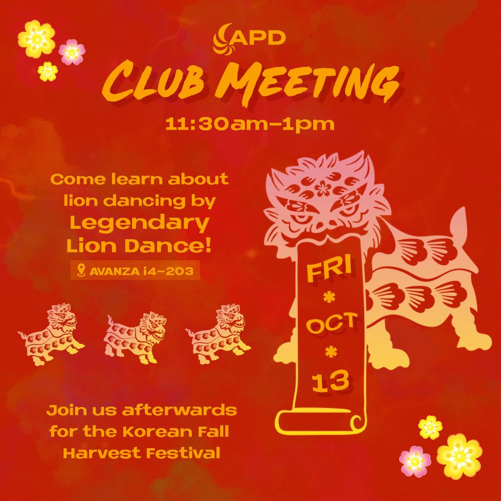

☰

Thought process:
This is a take on the classic Snake game, built using JavaScript and the p5.js library.
Players guide the snake to eat
"apples" and grow in length without hitting itself.
The goal was to practice object-oriented JavaScript and learn how game loops and collision detection work. I used
p5.js for intuitive drawing functions and created a simple UI with CSS. In addition,
this game is one of the first projects I had worked on over a school semester, so I wanted
to try and create a game that I could play.

Thought process:
While learning React, I wanted to build a practical app
that would help me understand the full development cycle — from managing user
input to storing and retrieving data. I chose a to-do list because it's a CRUD (Create, Read,
Update, Delete) pattern that aligns well with Firebase's real-time database capabilities.
Goals:
1. Create a user-friendly interface for adding, editing, and deleting tasks.
2. Utilize Firebase's real-time database to store and retrieve task data.
Achieved:
1. Implemented a user-friendly interface for adding, editing, and deleting tasks.
2. Gained experience with operations and error handling

Thought process: A responsive landing page for a fictional
beauty and wellness brand. The site features elegant visuals, green color
schemes, and mobile-friendly design.
I focused on clean visuals and usability while learning HTML/CSS.

Thought process: A simple blog platform where users can log in and
write posts. Built using PHP for server-side scripting and HTML for structure.
This project was designed to strengthen my understanding of session handling, form submission, and dynamic content
display using PHP. I implemented basic feedback messages to improve the user
experience during login and post creation

Thought process: A fully responsive resort website showcasing
outdoor adventures, lodging options, and coastal retreat packages.
Built with semantic HTML and styled using CSS techniques.
The focus was to create a visually
inviting layout for a travel-based business. I used grids and
flexbox for layout, consistent color schemes, and emphasized semantic HTML to
enhance SEO and accessibility..
Thought process: I explored and communicated the emotional and cultural complexities
of not speaking Vietnamese fluently, using video as a medium to reflect on language loss, identity, and
belonging..
Thought process: A stylized 3D logo featuring the initials "EB",
designed to look glossy and dimensional. Created in Adobe Illustrator using
gradients, highlights, and shadowing techniques.
This project allowed me to explore logo
design and vector illustration tools in Adobe Illustrator. I used layering and
blend modes to achieve a realistic glossy finish, reflecting a modern and bold brand identity.

Thought process: A digital illustration of Saturn created using
Adobe Illustrator, showcasing the planet's rings with a twist of two rings, smooth gradients
and vibrant hues.
I wanted to experiment with gradients and layer blending to create depth
and motion while maintaining a clean, vector look.




Thought process: A series of promotional flyers designed for the Asian Pacific Diversity Club,
at San Diego Mesa college, highlighting cultural events and student involvement.
My goal was to create visually engaging, inclusive designs
that reflect cultural pride and community. I used bold typography, vibrant colors, and relevant imagery to catch
attention and communicate event details clearly.
Thought process: A handmade manta ray crocheted using single and double crochet
stitches, stuffed with polyfill and finished with heart-shaped button eyes for a soft, lovable design.
I wanted to blend craft and character, creating something tactile and expressive.
I carefully shaped the wings using stitch increases and decreases, making sure the manta ray looked both realistic and adorable.
The heart eye buttons added a personal, adorable touch.